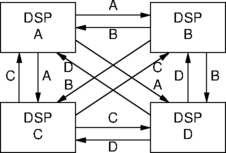
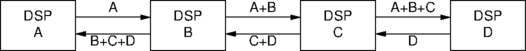
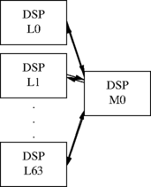
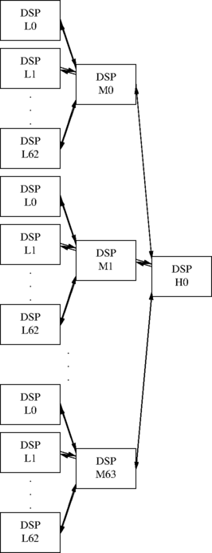

The number of participants that can be included together in a conference on a single Prosody module is limited to the number of calls that can be switched to a single Prosody module, this limit is 64 calls. Conferences with up to this number of participants can be built with either the High level conferencing API or by using the conferencing primitives (such as sm_conf_prim_start()) directly.
Larger conferences can be achieved by switching the conference outputs from one DSP to be the input to a conference on another DSP, and vice versa. There are two simple ways to do this: the broadcast model and the pipeline model, and the total size of the conference is limited in different ways by these two as described below. There's also a more complicated model, the hierarchical model, which allows for even bigger conferences.
With a classic single module conference on DSP A that has 64
participants, A0..A63, with each participant having input
A<N>.in and output A<N>.out.
This situation arranges for participant A0 to have output to them the combined inputs of A1..A63:
A0.out = A1.in + A2.in + A3.in + ... + A63.in
and for participant A1 to have output to them the combined inputs of
A0 and A2..A63:
A1.out = A0.in + A2.in + A3.in + ... + A63.in
and so on. Notice that each participant's output is formed from the sum of all the other participant's inputs, with the participant's own input being excluded from this sum.
Imagine there are 126 conference participants, A0..A62 and
B0..B62, and two DSPs, A and B. This would require:
A0.out = A1.in + A2.in + ... + A.62.in + B0.in + B1.in + B2.in + ... + B62.in A1.out = A0.in + A2.in + ... + A.62.in + B0.in + B1.in + B2.in + ... + B62.in B0.out = A0.in + A1.in + A2.in + ... + A.62.in + B1.in + B2.in + ... + B62.in B1.out = A0.in + A1.in + A2.in + ... + A.62.in + B0.in + B2.in + ... + B62.in
Now create a summed output on DSP A:
A.ASUM.out = A0.in + A1.in +... A62.in
and then switch this output to an input on DSP B, called
B.ASUM.in, then on DSP B create B0.out as
follows:
B0.out = B.ASUM.in + B1.in + B2.in + ... + B62.in B1.out = B.ASUM.in + B0.in + B2.in + ... + B62.in
Similarly, create a summed output B.BSUM.out = B0.in + B1.in + ...
+ B62.in and then switch this output to an input on DSP A,
A.ASUM.in, then on DSP A create A0.out as
follows:
A0.out = A1.in + A2.in ... + A.62.in + A.BSUM.in
In this way, a conference of 126 participants can be built up. This is the simplest case with more than one DSP in use, so it fits into both the broadcast and pipeline models. Bigger conferences fall into at most one of the two models.
A larger example would be to have 244 participants A0..A60,
B0..B60, C0..C60, D0..D60 and four DSPs A,B,C and D.
Create on DSP A:
A.ASUM.out = A0.in + A1.in + ... + A60.in
on DSP B:
B.BSUM.out = B0.in + B1.in + ... + B60.in
on DSP C:
C.CSUM.out = C0.in + C1.in + ... + C60.in
on DSP D:
D.DSUM.out = D0.in + D1.in + ... + D.60.in
and switch:
A.ASUM.out to B.ASUM.in, and to C.ASUM.in, and to D.ASUM.in B.BSUM.out to A.BSUM.in, and to C.BSUM.in, and to D.BSUM.in C.CSW.out to A.CSUM.in, and to B.CSUM.in, and to D.CSUM.in D.DSUM.out to A.DSUM.in, and to B.DSUM.in, and to C.DSUM.in
The following diagram illustrates this configuration:

In general, with this model we use N DSPs, each of which
provides as an output the sum of its local participants, and each of
which gets an input from all the other DSPs. This means that we lose
N-1 inputs from each DSP for carrying these sums,
leaving 64-(N-1) inputs for real participants, which
means we get N * (65 - N) participants. Solving this
quadratic, we find the maximum number of participants is 1056 which
occurs when we use 32 DSPs, losing 31 inputs per DSP for the sums,
hence the 32 * 33 = 1056 total participants. For more
DSPs, we lose too many inputs carrying the sums. In this model, the
delay through the conference is limited to twice the delay through
one DSP (i.e. 16 mS).
In this model the DSPs are arranged as a pipeline with each DSP passing on to is neighbour on the right the sum of all its own participants' inputs and those of all DSPs to the left, and vice versa.
Using 4 DSPs as in the broadcast model arranged as a pipeline of DSPs, then each would have an input of all participants to its left, and an input of all participants to its right, while also producing outputs to left and right suitable for its neighbours. It is constructed as follows: Create on DSP A:
A.right.out = A0.in + A1.in +... A62.in
on DSP B:
B.right.out = B.left.in + B0.in + B1.in +... + B61.in B.left.out = B0.in + B1.in +... + B61.in + B.right.in
on DSP C:
C.right.out = C.left.in + C0.in + C1.in +... + C61.in C.left.out = C0.in + C1.in +... + C61.in + C.right.in
on DSP D:
D.left.out = D0.in + D1.in +... + D62.in + D.right.in
and switch:
A.right.out to B.left.in B.left.out to A.right.in B.right.out to C.left.in C.left.out to B.right.in C.right.out to D.left.in D.left.out to C.right.in
The following diagram illustrates this configuration:

This method has the advantage of being scaleable while sacrificing only
two potential participants per DSP. With N DSPs you can
get 62 * N + 2 participants. However it does have the
disadvantage of incurring a maximum transit delay of N * 8 mS.
This maximum delay would be incurred for speech from participants
connected to the first DSP in the pipeline being transmitted to
participants connected to the last DSP in the pipeline, and vice versa.
Therefore, although the maximum size of a conference is not limited by
the DSP switching (unlike with the broadcast model), it is limited by
the maximum delay you can tolerate. For example, for 1056
participants (where the broadcast model stops, but has an 16 mS delay)
you need 17 DSPs (17 * 62 + 2 = 1056) and the delay is
136 mS.
The hierarchical model is more complex to set up, but allows bigger conferences than the broadcast model with lower delay than the pipeline model. The simplest hierarchical model uses two levels of DSPs. The bottom layer consists of DSPs (L0, L1, ... L63) each of which have 63 participants. Each of these provides the sum of all its participants up to the next level, and receives from the next level, the sum of all participants on the other DSPs. The next level up consists of a DSP (M0) which is responsible for generating all the sums for the layer below it. The following diagram illustrates this configuration:

For example, the DSP L1 gets the sum L0 + L2 + ... + L63
from M0. Since each of the L0..L63 DSPs has 63 local participants,
you can have up to 63 * 64 = 4032 participants - far
more than with the biggest broadcast model. And the delay is not
excessive. It's 3 * 8 = 24 mS at worst (from one L DSP
to another).
We can take this even further. Suppose we add another layer. That gives us this configuration:

We replace L63 with a link to a higher level again. This means we can
have 64 mid-level DSPs, each of which has 63 low-level DSPs, each of
which has 63 local participants. This gives up to 254016
participants, with a maximum delay of 5 * 8 = 40 mS
(which occurs between participants under different M DSPs. In
principle, this could be extended even further, with each extra layer
adding 16 mS delay and multiplying the number of participants by 63.
However, notice the connections to the M DSPs with only three layers.
There are 64 M DSPs, and all their inputs are in use, which is
64 * 64 = 4096 timeslots just to interconnect the DSPs.
This is the total capacity of a H.110 backplane, leaving no capacity
to connect the participants! In practice, a single chassis would
probably have only two layers, L0 .. L62 and M0, with the M0 <-> H0
link being a connection to a remote chassis. This uses 64 DSPs in a
chassis (which is the current limit, given that you can have at most
16 cards per chassis and at most 4 DSPs per card), but may incur a
little extra delay on the M0 <-> H0 link.
Document reference: AN 1340